Era clásica
La era clásica de Doctor Who se refiere a las primeras 26 temporadas, comenzando el 23 de noviembre de 1963 y terminando 6 de diciembre de 1989, protagonizada por los primeros siete Doctores. Se caracterizó por tener capítulos divididos en "seriales" que desarrollaban una trama a lo largo de varios episodios y fue un pilar de la ciencia ficción británica hasta su primer cancelación.
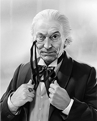
1st. Doctor
William Hartnell
1963–1966
Un anciano misterioso y autoritario, de mente brillante pero temperamento difícil, que descubre junto a sus compañeros el valor de la compasión y la aventura a través del tiempo y el espacio.
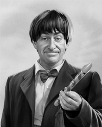
2nd. Doctor
Patrick Troughton
1966–1969
De apariencia torpe y alegre, pero en realidad astuto e impredecible, usa su ingenio y humor para vencer a enemigos mucho más poderosos de lo que aparenta.
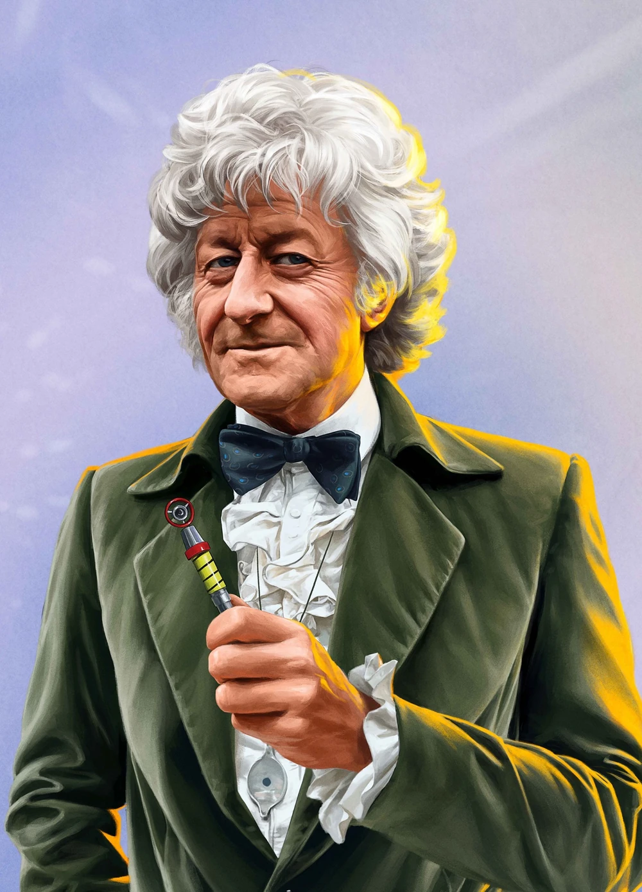
3rd. Doctor
Jon Pertwee,
1970–1974
Elegante, carismático y con alma de héroe de acción, trabaja con UNIT en la Tierra, enfrentando amenazas alienígenas con ciencia, gadgets y una fuerte convicción moral.
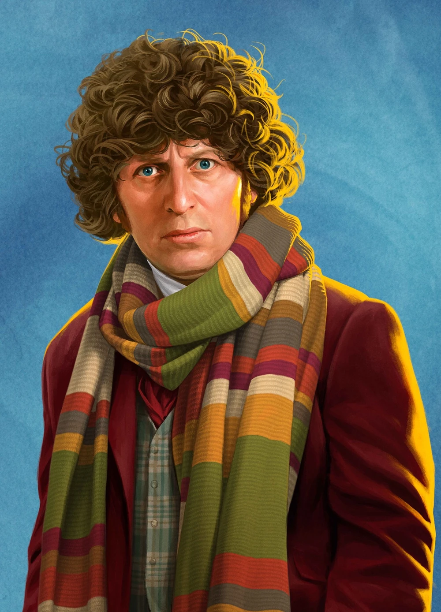
4th. Doctor
Tom Baker
1974-1981
Excéntrico, impredecible y encantador, con una bufanda interminable y una mente genial, representa la encarnación más icónica del Doctor y su espíritu libre y rebelde.
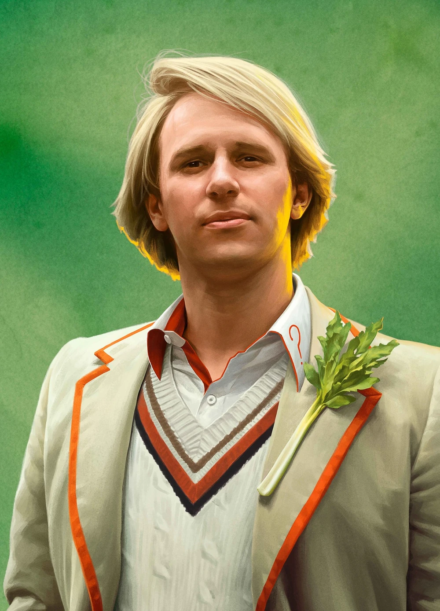
5th. Doctor
Peter Davison
1982-1984
Joven, sensible y profundamente humano, enfrenta dilemas éticos y tragedias con un sentido de responsabilidad que lo hace más vulnerable pero también más noble.
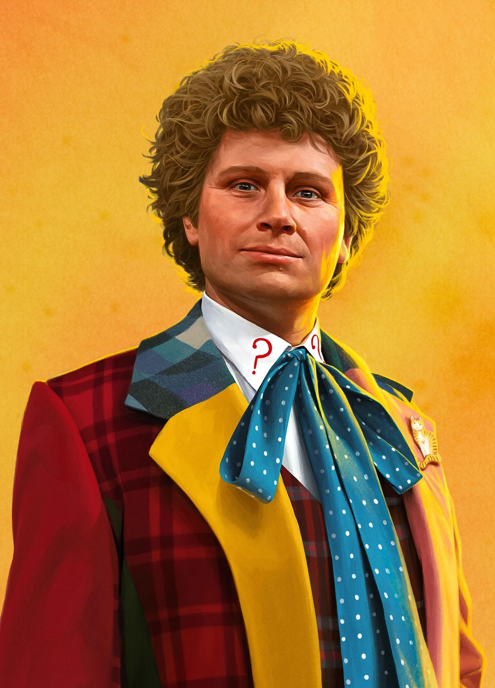
6th. Doctor
Colin Baker
1984–1986
De carácter fuerte y egocéntrico, con un traje tan colorido como su personalidad, combina arrogancia intelectual con una pasión intensa por la justicia y la vida.
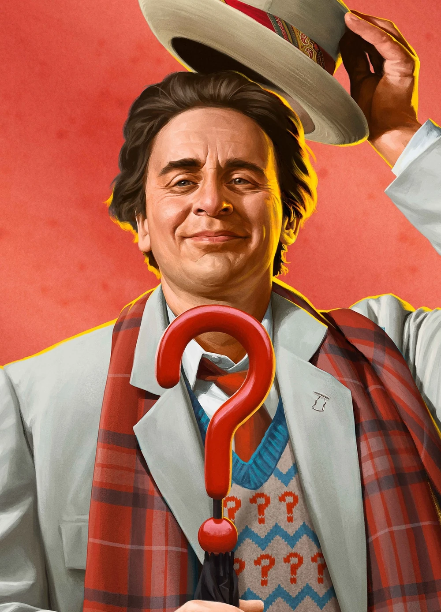
7th. Doctor
Sylvester McCoy
1987-1989
Con una fachada de bufón amable busca esconder su mente de estratega sombrío y manipulador, explorando el lado más misterioso y calculador del personaje.
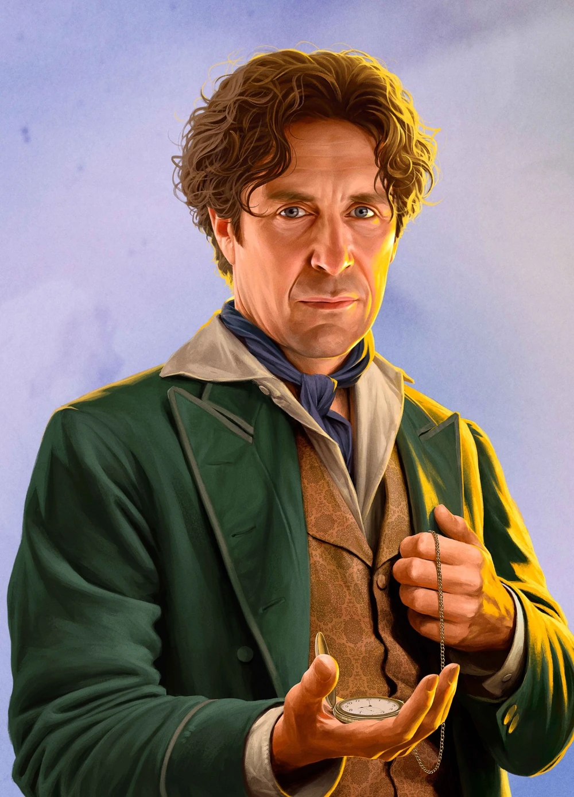
8th. Doctor
Paul McGann
Película 1996
Romántico, poético y apasionado, combina la curiosidad científica del Doctor con una profunda conexión emocional hacia los humanos y el universo mismo.
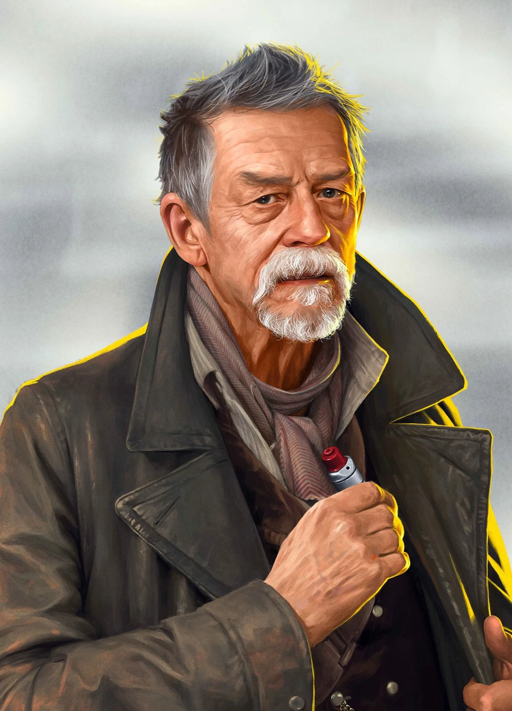
War Doctor
John Hurt
Especial 2013
Una encarnación nacida del dolor y la guerra, forjada para luchar en la Guerra del Tiempo, que carga con la culpa de haber hecho lo impensable por salvar la realidad.
Era moderna
La serie moderna es una continuación directa de la serie clásica, iniciada por el Noveno Doctor el 26 de marzo de2005 después de un especial de televisión en 1996 que incluyó al Octavo Doctor. Esta es considerada un buen punto de partida para los nuevos espectadores, ya que se puede empezar a ver sin tener que conocer la serie clásica anterior. La era moderna se distingue por la producción y efectos especiales actualizados, pero mantiene elementos clave como viajes en el tiempo y el espacio a través de la TARDIS.
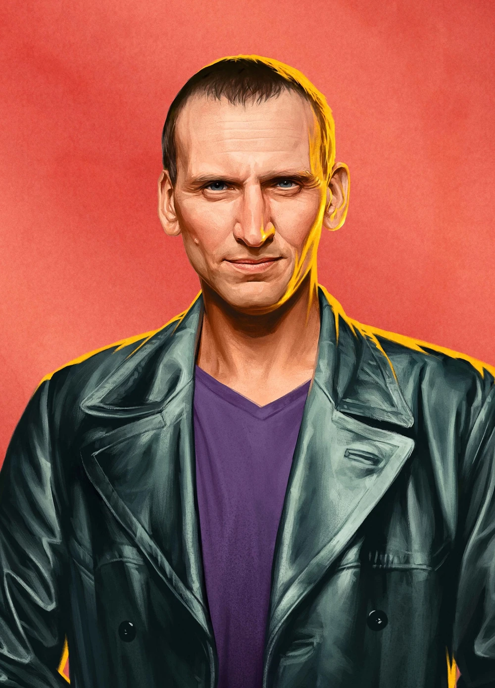
9th Doctor
Christopher Eccleston
2005
Cicatrizado por la guerra, sarcástico y lleno de culpa, busca redimirse salvando a otros, aprendiendo de nuevo a sonreír gracias a su compañera Rose Tyler.
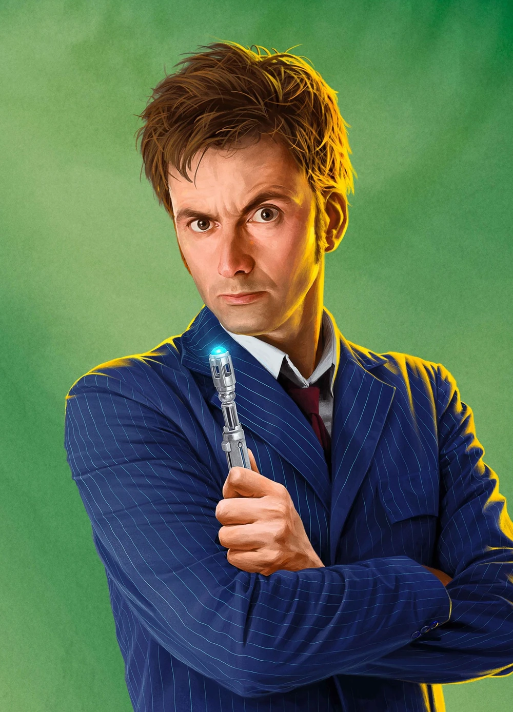
10th Doctor
David Tennant
2005-2010
Apasionado, encantador y trágico, muestra el Doctor más humano y emocional, alguien capaz de amar intensamente y sufrir con igual intensidad.
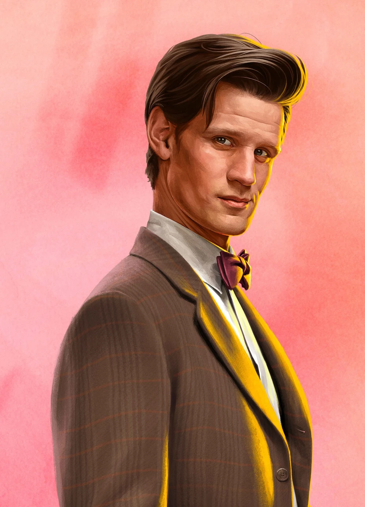
11th Doctor
Matt Smith
2010-2013
Con energía infantil y sabiduría antigua, combina humor, tristeza y ternura, representando la dualidad entre la inocencia y el peso de siglos de vida.
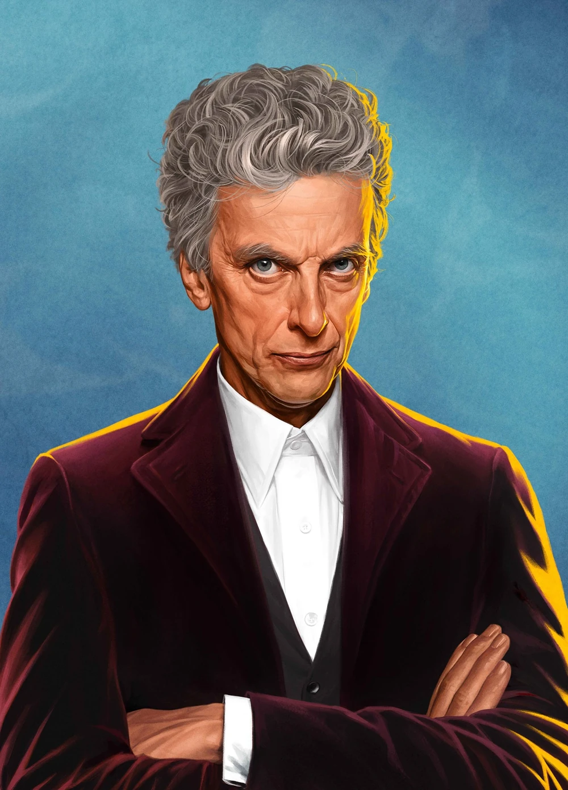
12th Doctor
Peter Capaldi
2013-2017
Un hombre cínico y reflexivo, pero con el corazon mas grande y amable de todos. Es un Doctor que se cuestiona constantemente su propia moralidad, buscando comprender si todavía es una buena persona.
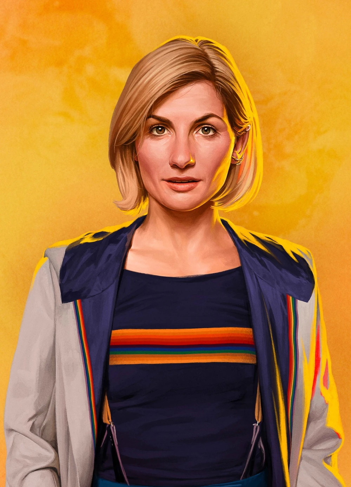
13th Doctor
Jodie Whittaker
2017-2022
Brillante, entusiasta y compasiva, devuelve la esperanza al personaje mientras enfrenta el misterio más profundo sobre su verdadero origen.
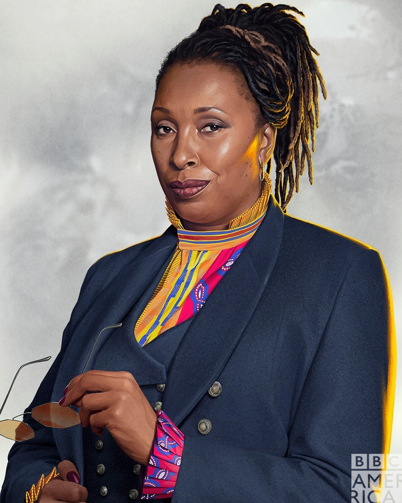
Fugitive Doctor
Jo Martin
2020-???
Una encarnación oculta del pasado, firme, poderosa y enigmática, que sugiere que el origen del Doctor es mucho más antiguo y misterioso de lo que jamás imaginó.
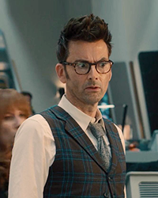
14th Doctor
David Tennant
Especial 2023
Una regeneración que mezcla nostalgia por el decimo Doctor y madurez, consciente de sus errores pasados y determinado a reparar lo que una vez perdió.
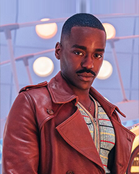
15th Doctor
Ncuti Gatwa
2023-2025
Hermoso, magnético, audaz y emocionalmente abierto, redefine al Doctor con una energía vibrante, combinando humor, empatía y un estilo deslumbrante.
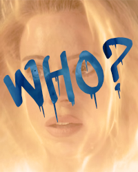
?? DOCTOR
Billie Piper
2025
A̸̮̥̤̒̌̇̄ p̴̘͍̣͍̍͊̂͊̍e҉̟͖̙̄̍̐̓ͅs̷̬̝̆̌̍͗a҉̜̝̖̖̒͂̀ͅr̷͙̝̪͙̔̿̎̊ d҉͉͕̝͐͑ḙ̴̣̆̅̄̈̚ l̷͖̣͉͓̊̐̆́a̴̯͙͊̔ r̵̲͙̗̱͛̔͌ͅe҉̝̲̳̤͍̈́̈́̄̈́g̵̗͖̘̎̅e̶̗̭̘͖̔͊̽̇ͅn̶͎͚̬̑͐ḙ̶̬̙̫͒̑̊͐ȑ̷͙̥͚̖͙͊́̂͆a̷̬̱͈͖͋̌̒̓c̵̤̫̃́ị̵͍̤̦̦̿̓̌ó҉̫͈̯̖̉̅̑̓̚n̸̜̪̣͒͑̓̈́̚,̵͉̘̭̘̀̃ l҉̙̟̝͗̾o̴̜͓̬̫̖̽̑͐ṣ̸̮͍̩̓͊ c̶̤͇͓̬̃̐r̵͎̝͌̄̐̃ͅé̶̤̣͊͋̒͑̍d̶͙̗̥̦͍̀̋i҈̭̬̝̠̀̿̈́̈́t̴͉̩̎̐̒̆o҉̞͕̝̭̔̑̆̔s̷̩̩̱̣̃̂̎̌͋ͅ d̸̗̬͈̝̓̔͆e̸̗̥͚̪̒̌l҈͎̲͔̞̅̃͐̓ e̴̤̟̣̠̮̍̆͆p҉̬̞́͋i҉͖͔̝̞̮̿̀s҈͈͎̗̖̎̋͑̋͋o҉̪̫̦̟͇̎̈͛ḋ̵̠͍̙̜̩͌̏̿̿ĭ̷̲͇͚̮́͛o̴̙̯̜͑̀̋̏̇ n҉͙͖̍͌̈́̌̓o̴̳̪̫̮̱͛̃̆͐ ľ̷͚̙̙̱̓͐́̎a̴̰̤͇̟͌͑ i̴̤̤̰͐̑̾d҈͇̞́͛̈́e҈̳̩̝̬́̄̔̌n̶̟̫̰̟̑̅̈̚t̵͚̪̮͕͓͋͐͐̈́̓i̷̱̯̲͛̒f̴̫̩̃͊̇ȋ̴͙̝̣̤͖́̈́̊c̴̳̳̩̰̐̇̐̋a̵̩̬̜͙̟͂̓̏̀n̴̝̱͍͖̪̍̐͛̈ c̸̰͉̆͌̑̅o҉̣̩̞͛͗̋̿́m̴͈͎̜̪̑͑̂o҉͚̣͚̪̟̉́͗̃̒ l̷͕̖̖͓̣͋̅ȃ̵̲̫̓̚ D̶̞̣͊̀ė̴̠̯̪̽͗c̵̩͍͙̳̖͊̾̐̃̒i̵͇̤̯̭͆̆ͅm҉̳͚̿̿͌̎o̶̭̖̙͛̀̄̿̂s҉̦͉̟͚̄͆̀̀e̴̦̯̙͖͋͒̑͒̇x̵͍͔̣̆́̓̌ͅt̸̤̱͚̣͆̈́̃̉ā̵̠͓̬̥̒ D҉̣̱͓̈́̊o҉̟̬̭͔̍̉̿̍́c̷͖̤͛̈́͗̚t̸͍͈̩́̒o̵͇͎̞̤͑̍͌r̶̪̟̰̈́̾̚a̴͔͖̗͌̎̀̄,̸̭͚̀͆ g̸̗̥͎̀̐̌̽̈ě̷͔͔͇̯̽̀n̴̞̝̣͉̯̄̊̌̊e҉̜̜̩͓̓̓͆͋r҉͖͈͇͆͗͋̿̓a̴͔̘̠̮͌̏n̷̥̫̣̓̈d̸̫̖̎̒͋̃o̵͓͙̟̓̒̀ ṁ̶̙̳̜͇͑̒̄u҈͙̱̗̬̓̊̽c҉̣͔̜͈̗͆̒h̸̠̘̆͛̚a҉̞͍͎̲͌͐ͅs̶̫͎̭̙͕͆͊̍̅̊ c҈̜̘͔̯̭̾́̋u҉̙̗̣͒͆͂ẽ̷̱͙̳͙͔̋s̵̤̥̞͙͋̈́̚ṭ̸͓͂̿̃̄͌i̵̟͎͕̽̔̒͊̚o̴͔̬̟͂͋͊̔͐n҈͉̗̤̰͉͊̎̏̎e҈̯̯̖͚͋̔͒s̸͕̝̲̳̳̔͛̀͛ s̸̜̙͔̏̂̊õ̴͚̱̣̘̆͒̔͌ͅb҈̦̰͑́r̴̞͈̰̟͆̑e҉̣̝̭̲̮̈́́̓̉̑ l̴̪̜̝̑̈́̿͆à̵̞̖̀ v҈̩͙͖͐́e҈̰̯͆̿̽r҈̘̗̰̪̐̓̀d̷̯̜̙͑͂̆ạ̷͍̩̣̊̓d҈̯̘̒̄̆e̵̬̲͉̳͗̿ȑ̴̥̬̥̓̍̄̽a̶̳̯̝̙̫͑̀̚ n̸̪̗̒̎̆̏ͅa҈̥̭͑̋t̷͉͈͙̦̾̿̅̈̀ṳ̷̬͔͆̅̾͑̈́r̵͕̪̣̫͒̂͂̈́̚ͅa҈̜̰͊̚l҉̝͈̫̠̰̄̾e҈̯̳̱͑̽z҈̥͓͍͕̈́̀̒à̵͖͈̟̃́̾ d҈̝͙͍̲̩̔͂ȅ̵̯̙͙͕͈̏͑̀̈ s̷̟̩̭̮̈́̌ụ̴͓͉͛̔̑̎ p̷͈͓̩͋̋ë̵̫͕͇́̀̚r̶̯͙̗͛̐̒s̴͈͇͇͍̊́o̸̯̥͊͒͒̌n̴͕̦̩͌̈́̔͆̅à̴͕͎̪͐j̵̘̩̏̊́̾e҈͈̖͚̮͊̆̓̃ͅ.̸͓͔̘̆̌̓̂